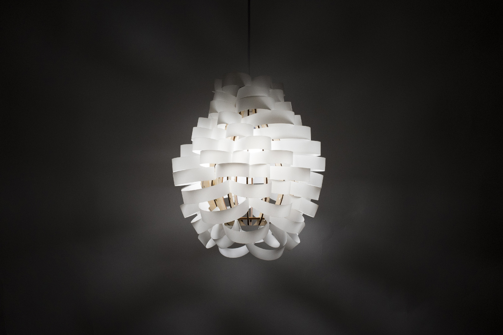

Elements
A Nature-Inspired Lamp
Rhinoceros 3D
Laser Cutting



Elements is a lamp inspired by wind that surrounds the light bulb with spiralling cloud of polypropylene strips that snap into a droplet-shaped plywood substructure.
Design Process
Brainstorming
I built Elements for my second project in 4.031: Design Studio - Objects & Interaction, where we were tasked with fabricating a lampshade that transforms 2D materials into 3D structures in order to explore geometry and the form of light.
Prototyping & Iteration
Initially my lamp design took another direction, as I explored how perspective could change a lamp's form. However, as I created prototypes and 3D models, I came up with the idea for my final design.
3D Modeling
Rhinoceros 3D
Finished Product
Check out other lamps made for the class in the Nervous System blog: